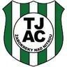
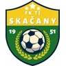

Posledný zápasA-mužstvo

TJ AC Žabokreky nad NitroudomáciVýsledok 1:0
 TJ Slovan Preseľanyhostia
TJ Slovan PreseľanyhostiaPrehrapolčas 0:0
Návrh webu · nie je to oficiálna stránka klubu
Ročník 2026/27 · VI. liga Severovýchod
Majster VII. ligy ObFZ Topoľčany 2022/23 hrá od roku 2025 krajskú VI. ligu Severovýchod a po jeseni je na 5. mieste zo 16. V mládeži hrajú 3 tímy, štadión stojí pri železničnej stanici.

Zimná prestávka. Jar sa začína v sobotu 6. marca 2027, áčko v ten deň hrá vonku na ihrisku TJ-ŠK Radošina.
VI. liga Severovýchod
Posledný zápasA-mužstvo

TJ AC Žabokreky nad NitroudomáciVýsledok 1:0
TJ Slovan PreseľanyhostiaPrehrapolčas 0:0
Hviezdy a fázy mesiaca
5.
miesto zo 16 · 24 bodov · skóre 32:24
| # | Tím | Z | V | R | P | Skóre | B |
|---|---|---|---|---|---|---|---|
| 3 |  FK TJ Skačany | 15 | 7 | 4 | 4 | 46:19 | 25 |
| 4 | 15 | 7 | 4 | 4 | 30:18 | 25 | |
| 5 | 15 | 7 | 3 | 5 | 32:24 | 24 | |
| 6 | 15 | 7 | 3 | 5 | 44:22 | 24 | |
| 7 | 15 | 7 | 2 | 6 | 17:18 | 23 |
Od 2014/15
Tri ročníky vo V. lige, pád do okresu a návrat: v ročníku 2022/23 áčko vyhralo VII. ligu ObFZ Topoľčany s 68 bodmi a skóre 70:19, od roku 2025 hrá krajskú VI. ligu.
Zdroj: konečné tabuľky zo Sportnetu.
Od prípravky U9 po žiakov U13
V mládeži hrajú 3 tímy v súťažiach ObFZ Topoľčany. Chcete, aby vaše dieťa hralo futbal v Preseľanoch? Napíšte klubu.
Mestečko s výsadami z roku 1646
1280
Prvá písomná zmienka o obci, pod názvom Prezlen. Najstarší názov Presteran je z 12. storočia.
1646
Ferdinand III. udelil Preseľanom 19. marca 1646 mestské trhové a jarmočné výsady, právo opevnenia, cechové právo a mýto.
1668
Mestečko dostalo pečať s nápisom „Hacc est veritas oppidi Pereszlény“, teda Toto je pravda mesta Preseľany.
Erb
V červenom štíte zlaté, striebrom lemované šikmé brvno, nad ním strieborný polmesiac a pod ním zlatá osemcípa hviezda.
1804
Rodák Michal Čerňanský dal postaviť kaplnku sv. Anny, v roku 1882 ju na vlastné náklady opravil farár Matej Turčányi.
Rodáci
V obci pôsobil kňaz a pomológ Matej Bazalica (1825 – 1848), narodil sa tu sochár a architekt Štefan Belohradský.
Zdroj: web obce Preseľany (História, Symboly obce, Kostolík sv. Anny), Wikipédia.
Pri železničnej stanici
Najbližšie doma
Najbližší zápasA-mužstvo
Výkop o 14:30